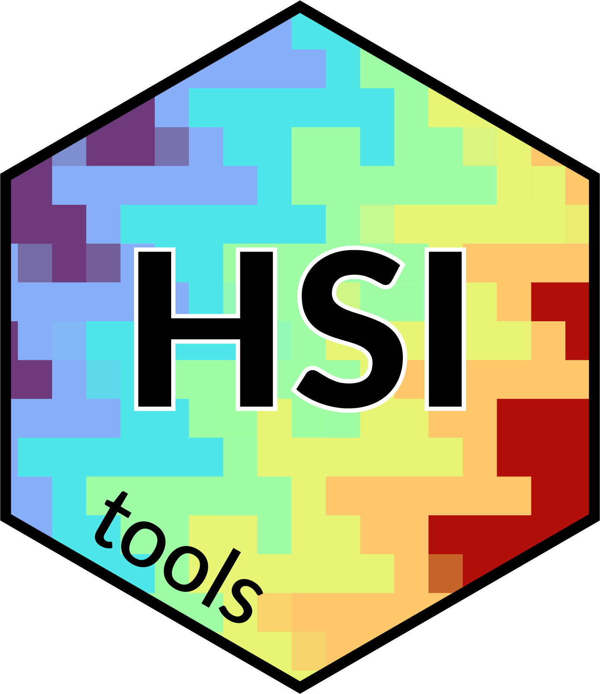

HSItools is an R package to process and visualize hyperspectral core scanning data.

Installation
You can install the development version of HSItools like so:
# install.packages("pak")
# pak::pak("mzarowka/HSItools@dev)Book
A more extensive tutorial is available at: https://mzarowka.quarto.pub/hsitools
Example
The basic workflow includes running the shiny app to choose analysis options and visually interact with the core image. After this, reflectance is calculated and all subsequent operations use reflectance or its subsets.
This work is supported by the National Science Centre, Poland, under research project „Exploring methods of hyperspectral imaging of lake sediments: proxy development and calibration” (2023/51/D/ST10/00801), and previously by the Polish National Agency for Academic Exchange (BPN/BEK/2021/1/00133).